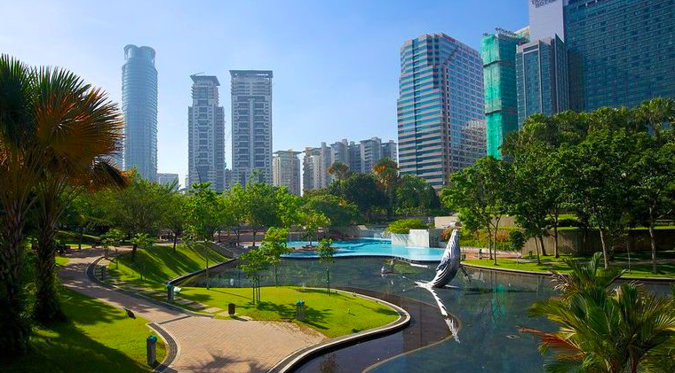

KLCC Park

KLCC Park is a 50 acre garden set near Suria KLCC shopping centre. It is designed by Roberto Burle Marx,
it wan intended to give a dash of greenery to the Petronas twin Towers and the zones encompassing it.
On the park ground is a 10,000 sqm synthetic (Lake Symphony) with a 43m scaffold that cuts across.
Lake Symphony is the reason most people frequent the park; it has water fountains that can shoot water up
to a height of 42m. These every day water happen around early afternoon and in the nights and are well known
with kids. KLCC Park has more than 1,900 native trees from 74 species;40 of these trees were relocated from the
previous Selangor Turf Club racecourse, which deceives the southeast of the city.
Other than the different cascades, wellsprings, course and reflecting pools spread around the recreation center,
there are an assortment of offices at KLCC Park including a two-section of land kids' jungle gym, a 1.3km-long running track,
sanctuaries and seats, designed pathways and figures. On KLCC Park's western stretch is a public kids' pool.